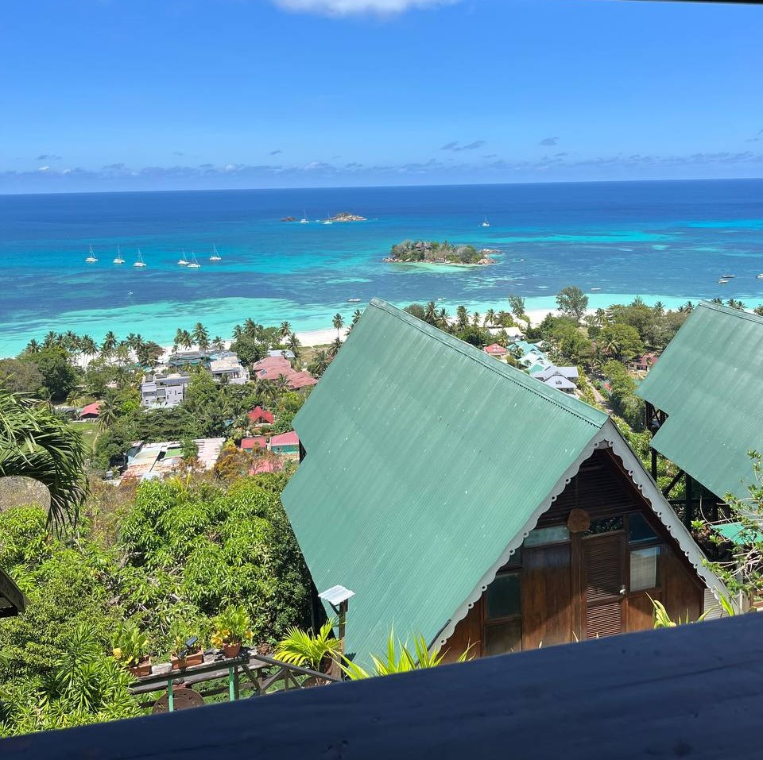

Bio
Mi chiamo Broggi Lorenzo, sono un ragazzo neo laureato in Informatica residente a Como. Ho concluso
i miei studi accademici a Luglio del 2025 (data di inizio: Settembre 2022) presso l'università Insubria nella sede
di Como.
Durante il mio percorso di studi ho imparato ad utilizzare e padroneggiare diversi linguaggi di codice (Scopri di più)
che mi permettono ad oggi di avere delle basi solide per entrare nel mondo del lavoro.
Il mio percorso di studi è stato accompagnato in tutta la sua durata anche da un percorso lavorativo non inerente
ad esso, ma che mi ha permesso di sostenermi a livello economico e che mi ha introdotto in dinamiche lavorative quali
il lavoro di squadra, la puntualità e il rispetto in ambito lavorativo.
La sede di questo posto è in Svizzera (Morbio Inferiore) il chè mi rende ad oggi munito di un permesso lavorativo di tipo
"G".
Per interesse personale e al fine di aumentare le mie conoscienze tecniche nell'ambito IT, in questi anni ho intrapreso
studi personali su differenti framework e linguaggi di codice, sviluppando piccoli progetti personali o semplicemente
seguendo determinati corsi di apprendimento.
La mia ambizione ad oggi è quella di entrare in un ambiente lavorativo
che possa formarmi e introdurmi nel mondo lavorativo, così da poter consolidare le mie conosciezne e abilità.
Sono molto affiscinato dagl'ambiti di sviluppo in contesti di lingauggi orientati come Java e Python, o in contesti
di forte crescita come il DevOps.
Sono un ragazzo con forte spirito di iniziativa e determinazione, che ho sviluppato in tutti i contesti della mia vita
durante lo svolgimento di progetti e obbiettivi. Ho una forte propensione all'interazione sociale che mi ha sempre
permesso di integrarmi in tutti gli ambienti di cui son stato parte fino ad oggi.
Extra
Sono una persona molto ambiziosa a cui piace riempire il proprio tempo libero con le proprie passioni. Oltre agli
studi nell'ambito IT, le passioni che mi caraterizzano principalmente sono la musica, l'intrattenimento e lo sport.
La musica in particolar modo è una passione che coltivo fin dall'adolescienza, precisamente nell'ambito della produzione
musicale. Ad oggi possiedo una perfetta padronanza di software quali Fl Studio, e ottime conoscienze di composizione, mix e
mastering.
-
 +39 366 2290882
+39 366 2290882
-
 Viale unità d'Italia 9, Senna Comasco (CO)
Viale unità d'Italia 9, Senna Comasco (CO)
-
 LinkedIn
LinkedIn
-
 lorybroggi02@gmail.com
lorybroggi02@gmail.com
-
 GitHub
GitHub
Canzone del periodo

Cage The Elephant – Cigarette Daydreams
Ultimo viaggio
Praslin, Seychelles ✈️